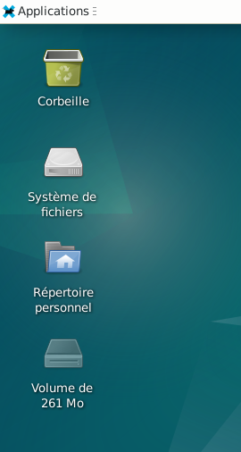
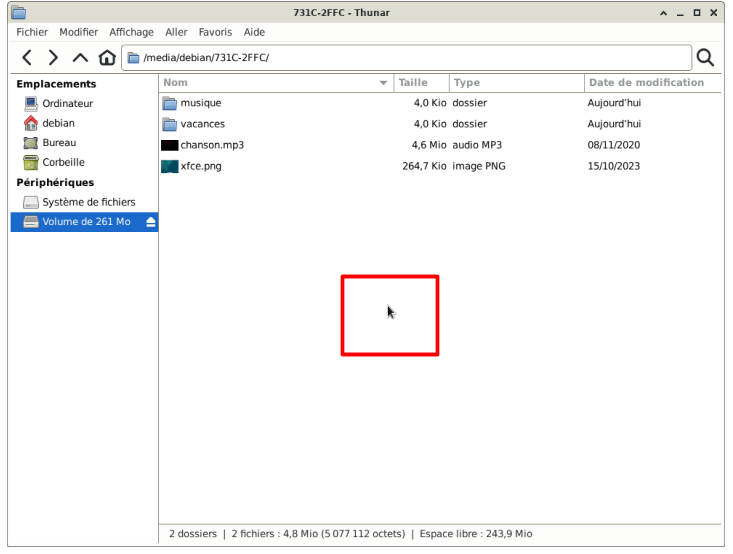
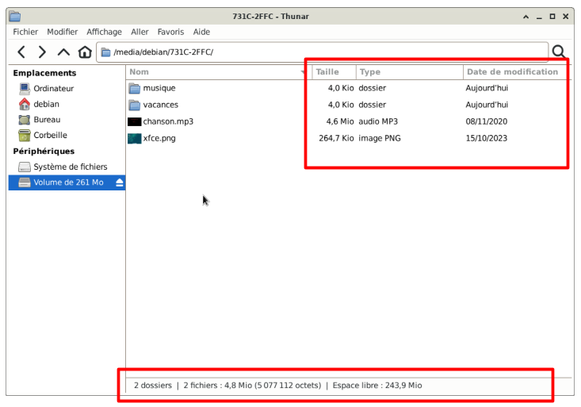
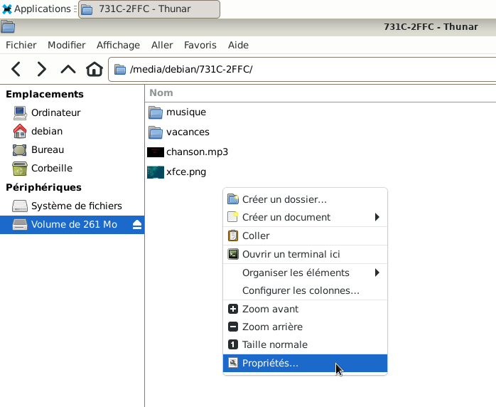
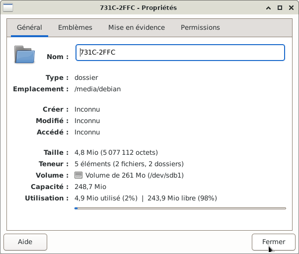

&
Connecter une clé USB ou un disque dur externe : Le site Xfce.
Le gestionnaire de fichiers Thunar sera utilisé pour ouvrir une clé USB ou un disque dur externe.





Plusieurs indications peuvent être intéressantes :
La taille du dossier ou du fichier
Le type : Dossier ou une image ou un audio...
La date de modification
Dans cet exemple : 2 dossiers (musique, vacances) et 2 fichiers (xfce.png, chanson.mp3)
Espace libre restant sur la clé USB : 243.9 Mo





Informations sur le logiciel libre et Merci.
Marques déposées :
Ce site ne fait pas partie de Debian, n'est pas produit par le projet
Debian, ni approuvé par le projet Debian.
Ce site n'est pas affilié à Debian. Debian est une marque déposée appartenant
à Software in the Public Interest, Inc.
Contribuer :
Ce site ne fait pas partie de XFCE, n'est pas produit par le projet
XFCE, ni approuvé par le projet XFCE.
Ce site n'est pas affilié à XFCE.
Ce site est juste réalisé par un passionné.